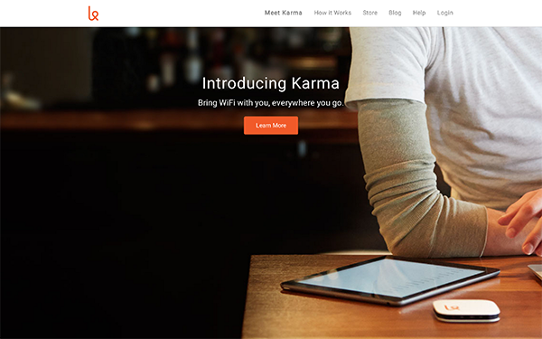
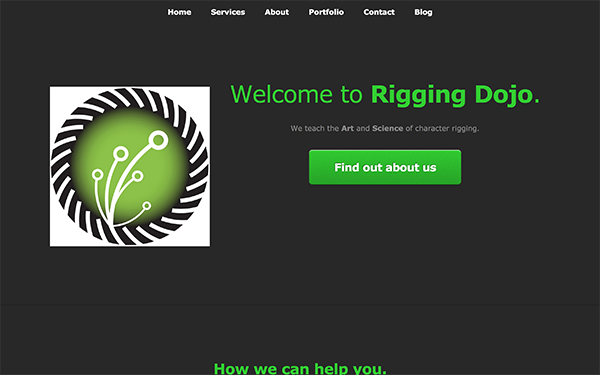
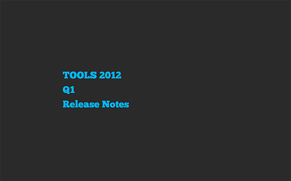
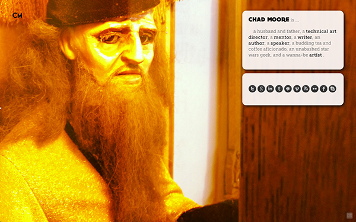

Here is some of my recent work.
A mix of from-scratch web development, usage of html/css frameworks as well as javaScript.

Hack the Times (Thinkfull Project)
The assignment was to use the chrome dveloper tools to "Hack" the front page of the New York Times.
- 
Karma Clone (Thinkfull Project)
The assignment was to clone the Karma website in order to better understand layout with CSS.
- 
Rigging Dojo (HTML5UP)
A redesign of Rigging Dojo. I co-founded an online school which teaches "technical art" aka the technical aspects of 3D computer animation for films, games and broadcast.
I used a template from HTML5UP. 
Coffee with Ted.
Wouldn't it be cool to have a TED Talk of a specific length delieverd to you at a specific time of day? I created the front end for it as I thought a 10 minute random TED talk would be great with my morning coffee. Built with Foundation.
- 
Release Notes
A simple jasvaScript based Slide Show based off of impress js.
- 
Footbeef - Landing Page
A landing page made with Weight Shift Personal Page.